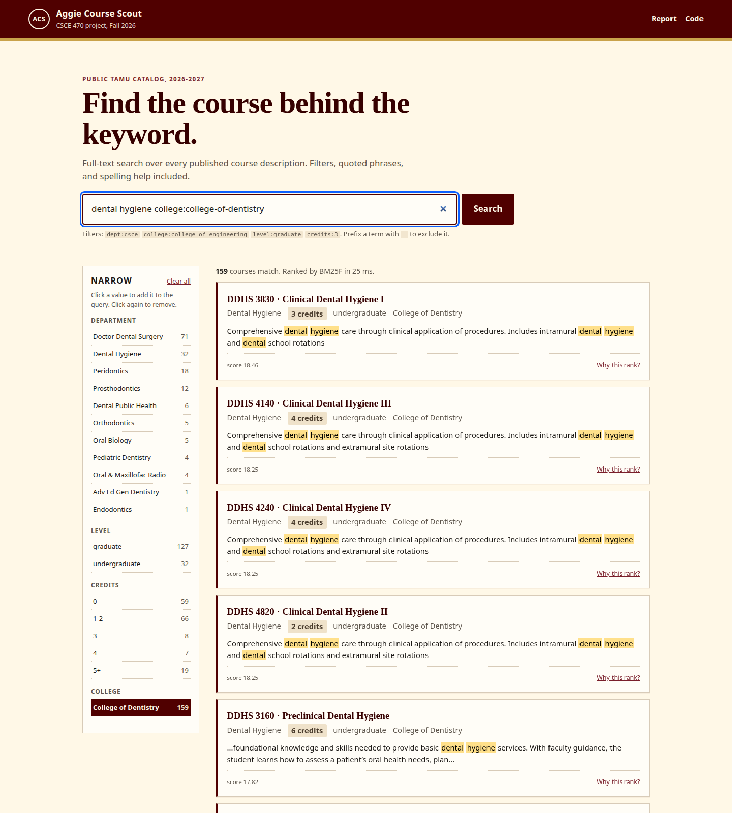

CSCE 470 final project · Fall 2026
Aggie Course Scout is a fielded BM25F search engine over 10,277 published Texas A&M course descriptions. It runs entirely in the browser on GitHub Pages, with no backend and no tracking. I crawled 383 department pages from the 2026-2027 catalog, parsed structured records, built a four-field index, and compared BM25F with TF-IDF and flat BM25 on 25 pooled queries. Both baselines get the same correction and synonym terms, and NDCG uses a global ideal. BM25F scores 0.776 P@10 and 0.801 NDCG@10 against 0.740 and 0.725 for flat BM25. It's ahead on NDCG (95% bootstrap interval 0.026 to 0.132), but the P@10, AP, and MRR intervals cross zero. The term sets are the same, but not the weighting: the baselines get full-weight expansions and no synonym phrase bonus. Calling 0.070 field weighting overstates it. Equalizing expansion weights and dropping that bonus cuts the gap to 0.046, with an interval from -0.0004 to 0.099. Correction is a separate within-system effect worth 0.141. Title-only still beats the full model, and stemming drags "operations" into "os."
Course search at TAMU is split in a bad way. The catalog publishes descriptions in one place, the schedule of classes in another, and degree audits somewhere else. Students who half-remember a title ("that networks class") get a department list and a browser find box. Advisors get the same. The catalog's own search is a general site search, not a course search, so a query like security can surface policy pages before it surfaces CSCE 465.
And a good course search should do four things: match titles strongly, understand department and level filters, tolerate a misspelling, and show why a result ranked where it did. That last one matters for trust. If the engine puts Securities Regulation above Computer Security for "security," I want to see that it matched the wrong sense of the word, not guess.
The tool is for TAMU students planning a term, advisors doing a quick lookup, and anyone building a degree plan who needs the official description text. It is read-only. It doesn't know seat counts, meeting times, or instructors, because the catalog doesn't publish those.
General web search engines index the catalog, but they optimize for pages, not course records. They don't expose dept: filters, they mix in program and policy pages, and they give no field-level ranking explanation. The catalog's built-in search has the same problem at a smaller scale.
On campus, the closest useful things are the unofficial grade-distribution sites, Aggie Grades and TAMU Grade Distributions (Aggie Grades, 2026; TAMU Grade Distributions, 2026), and the official schedule of classes. Those answer "who teaches it" and "when is it," not "which course is about this topic." None of them publishes a relevance evaluation. That gap is the project.
On the IR side, BM25F is the standard field-weighted extension of BM25 (Robertson, Zaragoza, and Taylor, 2004). It has been used in structured document retrieval for two decades, including web and product search.
Source: https://catalog.tamu.edu/undergraduate/course-descriptions/ and the graduate equivalent, 2026-2027 edition, accessed 2026-11-22 (Texas A&M University, 2026). The crawler read robots.txt first and stayed out of disallowed paths. It made 383 requests with 4 workers and a 0.2 second delay per worker, retried up to three times, and kept every raw page gzipped.
| Item | Count |
|---|---|
| Department index links discovered | 383 |
| Pages fetched successfully | 383 |
| Pages with zero course blocks | 7 |
| HTTP 404 pages | 0 |
| Parsed course blocks before dedupe | 10,277 |
| Unique level + code records | 10,277 |
| Undergraduate / graduate | 5,262 / 5,015 |
| Departments represented | 263 |
| Records with a prerequisite line | 8,564 |
The parsed schema is one JSON object per line: id, level, code, title, credits, description, prerequisites, corequisites, department, dept_code, college, course_level, url. HTML is stripped, whitespace collapsed, and hour boilerplate removed from descriptions. Records are deduplicated by level plus code, keeping the first occurrence. The output file has SHA-256 e16567db30e1aef9770dd3399792ece696c4e321fbda333cce8a508051196206 and a manifest with every request, byte count, page hash, and status.
Two data caveats. College isn't on department pages, so I mapped prefixes to colleges by hand; 36 records in professional and unplaced prefixes sit under "Other/Professional." And the crawl has 10,277 records, above my 6,000 to 9,000 target. I kept them rather than trimming a quarter of the catalog to hit a round number. Five records have an empty description and are kept; they still carry a title and code.
GitHub Pages serves the static files (docs.github.com/pages). The pipeline has four steps. src/crawl_catalog.py fetches and parses pages. src/build_index.py tokenizes four fields and writes a gzipped JSON postings file. web/js/search.js ranks in the browser. src/evaluate.py runs the baselines and the ablations over the same index. Nothing needs a server after the index is built.
Documents are tokenized with [a-z0-9]+, lowercased, stopped, and stemmed with a conservative Porter variant (Porter, 1980). The same stemmer is implemented in Python and JavaScript, and a test checks the two on a fixed word list. Fields are title, department, description, and prerequisites. Query terms score each field separately, the weighted term frequencies are summed and saturated once, and the result is multiplied by inverse document frequency.
Weights are title 3.0, department 2.0, description 1.0, prerequisite 0.5. Constants are k1 = 1.2 and b = 0.75. Quoted phrases earn a bonus, with an extra bonus when the phrase is in the title. Filters apply after scoring, so they can't inflate a score. A leading minus excludes a term, department, or level. Synonyms add terms at reduced weight: ml expands to "machine learning," db to "database," os to "operating system." An unknown term gets a Damerau-Levenshtein suggestion (Damerau, 1964; Levenshtein, 1966) within one edit for short words or two for long ones, and the correction is searched at 0.55 weight.
The why panel reports the IDF, raw term frequency, field, and contribution for every positive match. That's the same data the ranker used, not a post-hoc guess.
The first version of this evaluation compared BM25F with correction and synonym expansion against baselines that had neither. That inflated the headline. Every condition below gets the same corrected and expanded terms. The weighting differs: the baselines score every term at full weight, while BM25F discounts expansions and gives multi-word synonym phrases a bonus the baselines lack. One condition equalizes both so the comparison can be separated from the recipe.
I wrote 25 queries in four buckets: 7 known-item (a code or exact title), 7 exploratory topic queries, 5 misspellings, and 6 acronym or synonym queries. For each query I pooled the top 10 from two baselines and seven BM25F conditions. That produced 514 unique query-document pairs. The design follows pooled test-collection evaluation (Sanderson, 2010). Each pair got a grade from the actual record: 2 when the requested code or intent phrase was in the title, 1 when the phrase appeared in the description, 0 otherwise. The labels are rule-generated, with four applied overrides out of 514 pairs in eval/overrides.csv. The rule reuses the query string, so it mostly measures lexical title match, not topical relevance.
Relevance is binary at grade 1 or higher for P@10, AP@10, and MRR. NDCG@10 uses gains of 0, 1, and 2 (Järvelin and Kekäläinen, 2002). The ideal DCG for NDCG comes from every judged document for that query, sorted by grade. The earlier version used each system's own top ten as its ideal, which ignored recall and produced 13 perfect scores. AP@10 divides by min(10, judged relevant) for the query, not by all relevant documents. Because this is a pooled evaluation, every metric is computed only over documents some system retrieved, and unpooled documents count as 0.
Browser latency came from 75 searches in headless Chromium against a local server, three passes over the 25 queries, measured inside the page around the ranking call. The hosted site uses the same query code and index as the Python evaluator, and a 25-query parity test compares their result ids.
With the same terms on both sides, BM25F is ahead on NDCG: 0.801 against 0.725 for flat BM25 and 0.674 for TF-IDF. The gap is 0.070, not the 0.301 in the first draft. Some of that gap isn't field weighting: the baselines get expansion terms at full query weight and no phrase bonus. Equalizing both cuts the gap to 0.046. Elsewhere it's a tie or a loss. P@10 is 0.776 against 0.740, but the paired interval crosses zero. AP@10 is 0.773 against 0.725, also with an interval across zero. MRR edges forward, 0.871 against 0.853, but its interval crosses zero. NDCG is the only metric with a paired bootstrap interval above zero (0.026 to 0.132) and a sign test under 0.05 (p = 0.004, 18 wins, 4 losses).
| Condition | P@10 | NDCG@10 | AP@10 | MRR |
|---|---|---|---|---|
| TF-IDF, same terms | 0.700 | 0.674 | 0.670 | 0.794 |
| Flat BM25, same terms | 0.740 | 0.725 | 0.725 | 0.853 |
| BM25F, full | 0.776 | 0.801 | 0.773 | 0.871 |
| BM25F, no correction | 0.660 | 0.660 | 0.644 | 0.743 |
| BM25F, no synonyms | 0.720 | 0.744 | 0.719 | 0.808 |
| BM25F, no synonyms or correction | 0.612 | 0.606 | 0.590 | 0.680 |
| BM25F, title only | 0.716 | 0.806 | 0.716 | 0.873 |
| BM25F, no department field | 0.744 | 0.777 | 0.730 | 0.872 |
| BM25F, equal field weights | 0.776 | 0.786 | 0.791 | 0.893 |
| BM25F, equal expansion weights, no synonym phrase bonus | 0.752 | 0.771 | 0.754 | 0.853 |
| Flat BM25, duplicates collapsed | 0.716 | 0.723 | 0.712 | 0.853 |
| BM25F, duplicates collapsed | 0.756 | 0.799 | 0.763 | 0.871 |
The paired deltas below come from the same 25 queries. The interval is a 5,000-resample bootstrap over queries with a fixed seed; the sign test is exact and two-sided.
| Metric, BM25F minus flat | Mean | W / L / T | 95% interval | Sign p |
|---|---|---|---|---|
| P@10 | +0.036 | 8 / 4 / 13 | -0.004 to 0.080 | 0.388 |
| NDCG@10 | +0.076 | 18 / 4 / 3 | 0.026 to 0.132 | 0.004 |
| AP@10 | +0.048 | 9 / 6 / 10 | -0.013 to 0.118 | 0.607 |
| MRR | +0.018 | 2 / 2 / 21 | -0.020 to 0.069 | 1.000 |
| NDCG, equalized recipe | +0.046 | 17 / 6 / 2 | -0.000 to 0.099 | 0.035 |
Latency was p50 12.0 ms and p95 24.2 ms over 75 searches. The worst single call was 172 ms on a cold first query. The gzipped index is 2.2 MB and the page is ready in a few hundred milliseconds on localhost.
The field-weight story gets weaker once the expansion weights match. The equalized recipe is only 0.046 NDCG ahead, with an interval that touches zero. On the shipped recipe, a title-only ranker beats the full model on NDCG, 0.806 to 0.801, while giving up P@10. Equal weights get higher P@10, AP@10, and MRR but about the same NDCG. Removing the department field costs 0.022 NDCG. On the 14 non-typo, non-synonym queries, full BM25F scores 0.801 against flat BM25's 0.725. The 2.0 department weight isn't isolated; the 0.022 effect is small and untested.
Stemming conflates operating with operations. The stemmer maps both to oper. For os, SCMT 661 Operations Strategy lands at rank 3, above Unix System Administration. It isn't an operating systems course.
Software is a modifier, not a topic. The top results for "software engineering" include four software courses that aren't engineering courses. CSCE 429 Software Development and CSCE 713 Software Security are both manual grade-1 overrides, and CSCE 713 sits at rank 5. The query parser treats "software" and "engineering" as independent terms, so a course with one strong term but not the phrase still scores. Requiring the phrase by default when two content words appear together would help.
The broad security sense wins. "computer security" puts CSCE 465 first, which is right, then CSCE 413 Software Security and MARA 360 Maritime Cybersecurity. Query "security" alone returns LAW 706 Securities Regulation first because "securities" tokenizes to the same stem as "security." That's a defensible false friend, not a bug I can fix without a sense model.
Correction and ranking are two different comparisons. The 0.070 gap is BM25F against flat BM25 with the same terms but heavier baseline expansion weights and no BM25F phrase bonus, so it's a ranking-recipe comparison. The 0.141 no-correction effect is within BM25F, where the corrector is removed from a system that otherwise has it. Synonyms account for 0.059. Those numbers aren't pieces of the 0.070, and the abstract used to imply they were.
The known-item bucket isn't a strict known-item test. Six records get grade 2 for CSCE 310. The grade rule now matches "microeconomic" by word boundary, so ECON 323 and ECON 607 get the grade 2 they deserve for the microeconomics query. But CSCE 110 Programming I doesn't appear in the full BM25F top ten at all, even though it gets grade 2. The bucket is really "short query, sometimes with a code."
Cross-level duplicates count twice. There are 96 code pairs with identical text across undergraduate and graduate levels. Five duplicate slots appear in the BM25F top ten across four queries. P@10 is inflated by roughly 0.02 overall.
The pool is small. One grader, 25 queries, 514 pairs, no confidence intervals. The typo bucket has five queries. A second grader would probably move NDCG by several points. The judgments are reproducible from eval/judgments.csv, but they aren't gold-standard TREC judgments.
BM25F is ahead on NDCG, ties on P@10, AP, and MRR. That's the shape of the result, not a blowout. The title-only variant beats it on NDCG, and duplicates barely move the gap (0.799 to 0.723 after collapsing them).
So the honest takeaway is narrower than the first draft: the shipped recipe is ahead on NDCG, but equalizing the expansion weights cuts the gap to 0.046 and its interval touches zero. The product's correction and interface do more visible work than the weights. But the interval is wide and the other metrics won't back a stronger claim.

I used an AI coding agent for boilerplate and first drafts, set the topic and grade rules myself, and ran every command. Checking it caught two bugs (cross-field phrase matches and missing course-code tokens); both are fixed and tested.